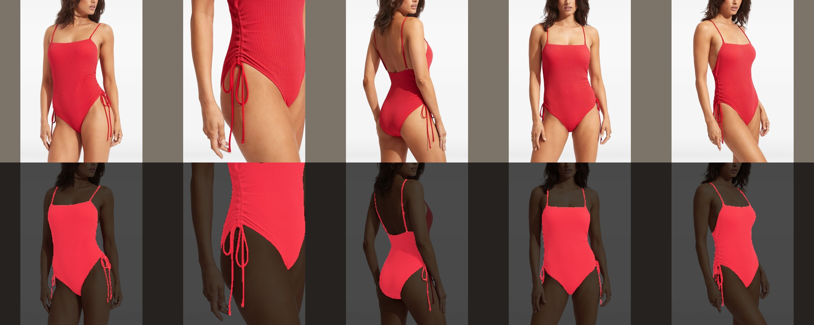
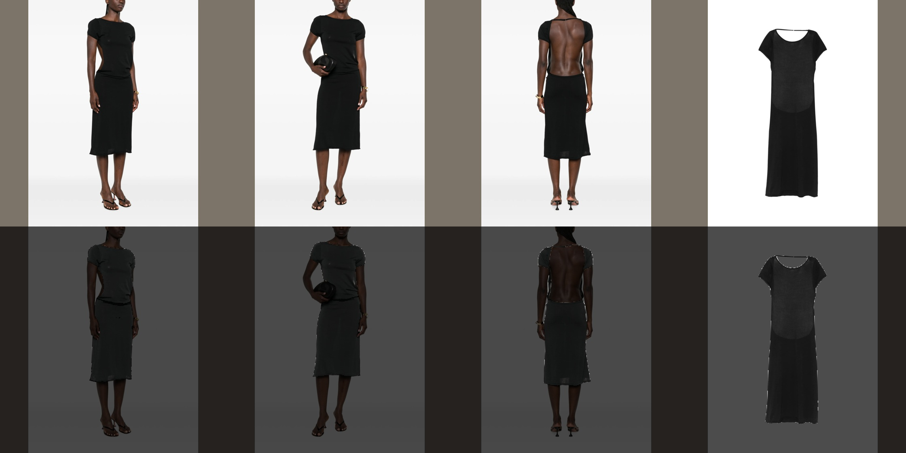

SKU-wide garment veto
Browse large comparisons of all completed real SKUs →
Ignore closeup/detail photos → compare SAM3 partitions across overview photos → keep garments supported in every overview.
These are constructed cases with known identities, not a measure of natural-image accuracy.
30/100 preselected SKUs displayed. Every completed result is included, including empty outputs. Processing errors: 6.
Focused visible-part checks: passed · 4/4 constructed candidate-identity checks passed. Includes deliberately wrong garment matches. Evidence. This is not a natural-image accuracy estimate.
Independent file audit: 94 image outputs checked for whole-region deletion, unchanged input labels and native image geometry. Audit receipt. This tests file integrity, not semantic accuracy.
Four requested cases
4/4 completed results.
Processing error — no mask decision
Track lacks evidence in at least one required viewDolce & Gabbana ribbed tank top
Processing error — no mask decision
Track lacks evidence in at least one required viewDolce & Gabbana ribbed tank top
Processing error — no mask decision
Track lacks evidence in at least one required viewGR10K logo-patch knitwear
Processing error — no mask decision
Track lacks evidence in at least one required view
Natural SKU sample
3/64 completed results.
 Palm Angels Sunset Blvd Palm loose T-shirt
Palm Angels Sunset Blvd Palm loose T-shirt36892437 · 3 overviews · 0 ignored closeups · 1 groups survive · 3/8 regions kept

Seafolly ruched drawstring swimsuit36791128 · 4 overviews · 1 ignored closeups · 1 groups survive · 5/5 regions kept

Frankies Bikinis x Jennie Rosalie midi dress36640328 · 4 overviews · 1 ignored closeups · 1 groups survive · 7/7 regions kept
Controlled checks
29/32 completed results.
 all present
all presentcontrol_00_all_present · 2 overviews · 1 ignored closeups · 3 groups survive · 6/6 regions kept
 last view absent
last view absentcontrol_00_last_view_absent · 1 overviews · 2 ignored closeups · 0 groups survive · 2/2 regions kept
 changing distractors
changing distractorscontrol_00_changing_distractors · 2 overviews · 1 ignored closeups · 1 groups survive · 2/4 regions kept
 similar fabrics
similar fabricscontrol_00_similar_fabrics · 3 overviews · 0 ignored closeups · 1 groups survive · 5/6 regions kept
 all present
all presentcontrol_01_all_present · 3 overviews · 0 ignored closeups · 3 groups survive · 9/9 regions kept
 last view absent
last view absentcontrol_01_last_view_absent · 3 overviews · 0 ignored closeups · 1 groups survive · 3/5 regions kept
 changing distractors
changing distractorscontrol_01_changing_distractors · 3 overviews · 0 ignored closeups · 1 groups survive · 3/6 regions kept
 similar fabrics
similar fabricscontrol_01_similar_fabrics · 3 overviews · 0 ignored closeups · 1 groups survive · 3/6 regions kept
 all present
all presentcontrol_02_all_present · 3 overviews · 0 ignored closeups · 3 groups survive · 9/9 regions kept
 last view absent
last view absentcontrol_02_last_view_absent · 3 overviews · 0 ignored closeups · 1 groups survive · 3/5 regions kept
 changing distractors
changing distractorscontrol_02_changing_distractors · 3 overviews · 0 ignored closeups · 1 groups survive · 3/6 regions kept
 similar fabrics
similar fabricscontrol_02_similar_fabrics · 3 overviews · 0 ignored closeups · 1 groups survive · 3/6 regions kept
 all present
all presentcontrol_03_all_present · 3 overviews · 0 ignored closeups · 3 groups survive · 9/9 regions kept
 last view absent
last view absentcontrol_03_last_view_absent · 3 overviews · 0 ignored closeups · 1 groups survive · 3/5 regions kept
 changing distractors
changing distractorscontrol_03_changing_distractors · 3 overviews · 0 ignored closeups · 1 groups survive · 3/6 regions kept
 similar fabrics
similar fabricscontrol_03_similar_fabrics · 3 overviews · 0 ignored closeups · 1 groups survive · 3/6 regions kept
 all present
all presentcontrol_04_all_present · 3 overviews · 0 ignored closeups · 3 groups survive · 9/9 regions kept
 last view absent
last view absentcontrol_04_last_view_absent · 3 overviews · 0 ignored closeups · 1 groups survive · 3/5 regions keptchanging distractors
Processing error — no mask decision
Track lacks evidence in at least one required view
 similar fabrics
similar fabricscontrol_04_similar_fabrics · 3 overviews · 0 ignored closeups · 2 groups survive · 6/6 regions kept
 all present
all presentcontrol_05_all_present · 3 overviews · 0 ignored closeups · 3 groups survive · 9/9 regions kept
 last view absent
last view absentcontrol_05_last_view_absent · 2 overviews · 1 ignored closeups · 2 groups survive · 4/4 regions kept
 changing distractors
changing distractorscontrol_05_changing_distractors · 3 overviews · 0 ignored closeups · 1 groups survive · 3/6 regions kept
 similar fabrics
similar fabricscontrol_05_similar_fabrics · 3 overviews · 0 ignored closeups · 1 groups survive · 3/6 regions kept
 all present
all presentcontrol_06_all_present · 3 overviews · 0 ignored closeups · 3 groups survive · 9/9 regions keptlast view absent
Processing error — no mask decision
Track lacks evidence in at least one required view
 changing distractors
changing distractorscontrol_06_changing_distractors · 3 overviews · 0 ignored closeups · 1 groups survive · 3/6 regions kept
 similar fabrics
similar fabricscontrol_06_similar_fabrics · 3 overviews · 0 ignored closeups · 1 groups survive · 3/6 regions kept
 all present
all presentcontrol_07_all_present · 3 overviews · 0 ignored closeups · 3 groups survive · 9/9 regions kept
The whole SKU is inspected twice, reversing image and region order and renaming every region ID using frozen Qwen/Qwen3-VL-32B-Instruct. Only overview photographs and their regions are available to the veto. Closeups are excluded from matching and context. Any visible part of the same garment counts in an overview; a full silhouette is never required. Updated results identify focused per-view reviews when the global inspections disagree. Extra and disputed fragments are checked against the confirmed garment in the full source photograph. Matching compares visible garment pieces, not the title or the item for sale. Repeated styling is eligible too.
No segmentation model is trained here. Kept and removed masks contain only whole original SAM3 partitions. A mixed or defective input partition cannot be repaired by this veto. There is no forced survivor and no calibrated confidence claim.